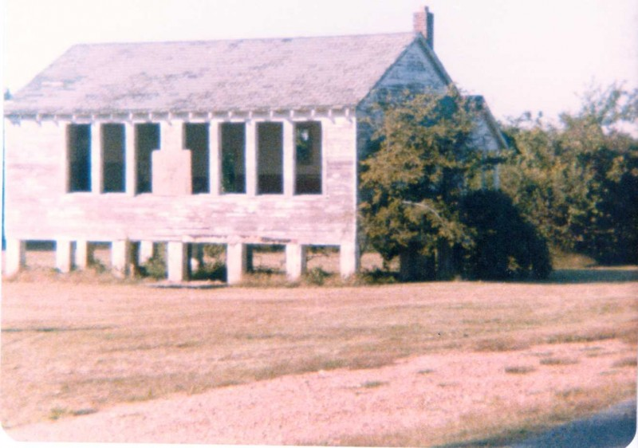

Established and constructed in 1930 near Higgerson Landing (located eleven miles east of New Madrid, MO on an acre of land purchased from John E. "Eddie" Higgerson for $25. Floated from its wooden piers in 1937 from heavy flooding, prior to the present levee system. Destroyed by fire in 1940 and replaced with this building. The school closed in May, 1968. Original building was relocated to this site on June 10, 1997. Dedicated as an historic site on June 13, 1998. Gift shop and museum exhibit opened across the street in 2013.
Last Known Image in Original Location Image courtesy of Bill Henry, c. 1995